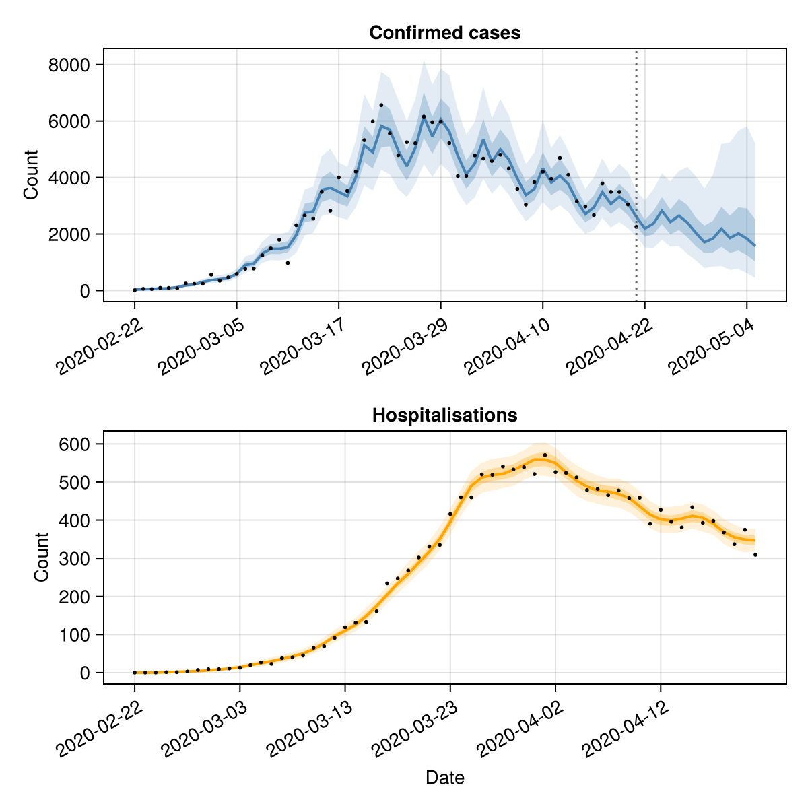

Forecasting multiple data streams
This tutorial demonstrates how to use EpiNow2.jl to forecast multiple epidemiological outcomes — for example, cases and hospitalisations — by combining estimate_infections() with estimate_secondary().
Setup
using EpiNow2
using CSV, DataFrames, Dates, Distributions, Statistics, Random
using CairoMakie
Random.seed!(6789)Data
We use the example case data and simulate a hospitalisation time series, assuming 10% of cases are hospitalised with a log-normal delay (mean ~7 days).
pkgdir = dirname(dirname(pathof(EpiNow2)))
cases_df = CSV.read(
joinpath(pkgdir, "test", "reference", "example_confirmed_full.csv"),
DataFrame
)
cases_df.date = Date.(cases_df.date)
cases_df = first(cases_df, 60)
# Simulate hospitalisations: 10% of cases with a lognormal delay
primary = DataFrame(date=cases_df.date, primary=cases_df.confirm)
hosp = simulate_secondary(
primary;
delays = delay_opts(LogNormal(1.6, 0.5)),
frac = 0.1
)
df = DataFrame(
date = cases_df.date,
cases = cases_df.confirm,
hospitalisations = hosp.secondary
)
first(df, 6)| Row | date | cases | hospitalisations |
|---|---|---|---|
| Date | Int64 | Int64 | |
| 1 | 2020-02-22 | 14 | 0 |
| 2 | 2020-02-23 | 62 | 0 |
| 3 | 2020-02-24 | 53 | 0 |
| 4 | 2020-02-25 | 97 | 1 |
| 5 | 2020-02-26 | 93 | 1 |
| 6 | 2020-02-27 | 78 | 3 |
fig = Figure(size=(600, 300))
ax = Axis(fig[1, 1]; xlabel="Date", ylabel="Count")
date_nums = Dates.value.(df.date .- df.date[1])
lines!(ax, date_nums, Float64.(df.cases); label="Cases")
lines!(ax, date_nums, Float64.(df.hospitalisations); label="Hospitalisations")
tick_step = max(1, nrow(df) ÷ 6)
ax.xticks = (date_nums[1:tick_step:end], string.(df.date[1:tick_step:end]))
ax.xticklabelrotation = π/6
axislegend(ax; position=:lt)
fig
Estimating infections
We first estimate infections and forecast cases using estimate_infections(). We use the confirmed cases and specify the generation time, incubation period, and reporting delay.
generation_time = UncertainDistribution(
(shape, rate) -> Gamma(max(1e-6, shape), max(1e-6, 1 / rate)),
[truncated(Normal(1.4, 0.48); lower=0.01),
truncated(Normal(0.38, 0.25); lower=0.01)],
14.0
)
incubation_period = UncertainDistribution(
(μ, σ) -> LogNormal(μ, σ),
[Normal(1.62, 0.064), truncated(Normal(0.418, 0.069); lower=0.01)],
14.0
)
reporting_delay = LogNormal(0.5, 0.5)
delay = incubation_period + reporting_delay
est = estimate_infections(
rename(df[!, [:date, :cases]], :cases => :confirm);
generation_time = gt_opts(generation_time),
delays = delay_opts(discretise(delay)),
forecast = forecast_opts(horizon=14),
inference = inference_opts(samples=500, warmup=250, chains=1),
verbose=false
)
estEpiNow2 estimate_infections result
Data: 60 days (2020-02-22 to 2020-04-21)
Forecast: 14 days
Timing: 299.8s
Latest Rt: 0.93 (90% CrI: 0.76-1.09)
Latest infections: 1300.29 (90% CrI: 212.53-7530.81)
Latest reports: 1570.5 (90% CrI: 443.35-5188.8)
Estimating the secondary relationship
We use estimate_secondary() to learn the delay and scaling between cases and hospitalisations.
sec_data = DataFrame(
date = df.date,
primary = df.cases,
secondary = df.hospitalisations
)
sec = estimate_secondary(
sec_data;
delays = delay_opts(LogNormal(1.6, 0.5)),
obs = obs_opts(week_effect=false),
inference = inference_opts(samples=500, warmup=250, chains=1),
burn_in=14,
verbose=false
)
secEpiNow2.EstimateSecondaryResult(EpiNow2.EpiNow2Fit{EpiNow2.SecondaryMetadata, @NamedTuple{expected::Vector{Float64}}}(MCMC chain (500×16×1 Array{Float64, 3}), [(expected = [0.00011712202656652722, 0.016799412225161507, 0.18249141658790186, 0.7688069756681952, 1.7541672830965769, 3.0430513246910382, 4.466830509601308, 5.863128658420756, 8.012423586619624, 11.12394251778317 … 404.7122406748547, 402.05015840390445, 406.39620035825664, 411.94597075380875, 408.0648690068483, 392.3999983168324, 371.0082182191733, 355.46525283873154, 349.7162113654458, 348.34979429171665],), (expected = [0.00011635394570879615, 0.016688300326308882, 0.181284346750723, 0.7637217634076109, 1.742564475402277, 3.022923285484209, 4.437284984583214, 5.824347418943449, 7.959425989223157, 11.050364000468589 … 402.0353004476222, 399.3908263298746, 403.708121699873, 409.2211835352005, 405.3657530587723, 389.8044965380196, 368.55421084320204, 353.11405329805274, 347.4030384493147, 346.0456594438059],), (expected = [0.00011644340965187756, 0.01670124233429484, 0.18142494292119346, 0.7643140749274965, 1.7439159384893976, 3.0252677440601716, 4.440726365971545, 5.828864550917645, 7.965599003417177, 11.058934223536628 … 402.3471030732322, 399.7005780062911, 404.0212216992695, 409.53855924659956, 405.6801386512763, 390.106813437432, 368.8400468642346, 353.38791454555434, 347.67247046031093, 346.31403872550584],), (expected = [0.00011631596380095873, 0.01668280579814901, 0.18122465666100449, 0.763470297612739, 1.7419907118875846, 3.021927945836818, 4.435823946468608, 5.822429671028211, 7.956805236681735, 11.04672551314616 … 401.90292467497574, 399.2593212874976, 403.57519512731926, 409.0864417095552, 405.2322806877967, 389.676147929455, 368.43285918985936, 352.9977855335817, 347.2886511167463, 345.93171904735226],), (expected = [0.00011835301969285115, 0.016977489809524737, 0.18442597159940086, 0.7769569787253853, 1.7727629509536473, 3.0753102693849326, 4.514182735405169, 5.9252828427704465, 8.097362141525746, 11.241865843364943 … 409.00253770040223, 406.3122350730375, 410.7043488014599, 416.31295152548216, 412.39070676961705, 396.5597750082063, 374.9412236851503, 359.23348953420265, 353.4235032880274, 352.04260102078956],), (expected = [0.0001179978046237297, 0.01692610378625143, 0.18386773688839073, 0.7746052158784674, 1.7673969896806268, 3.0660016363599483, 4.500518788952271, 5.907347646855995, 8.072852293333373, 11.207837917983548 … 407.76453066210746, 405.0823712937424, 409.4611905625444, 415.0528166445553, 411.14244410506507, 395.35943088494645, 373.80631661006055, 358.14612809438296, 352.3537280566532, 350.97700563323696],), (expected = [0.00011603422140499169, 0.016642048458230838, 0.1807818871991656, 0.7616049733153332, 1.7377346458668876, 3.0145447101589986, 4.4249862502483275, 5.808204190443805, 7.9373650046792275, 11.019735922725758 … 400.92098697155586, 398.28384249165504, 402.58917169744484, 408.08695308574187, 404.24220863151584, 388.72408294496944, 367.5326962566633, 352.1353338980283, 346.4401481588652, 345.08653137453456],), (expected = [0.00011526519173394265, 0.016530799302410595, 0.1795733262638482, 0.7565134792719537, 1.726117505178405, 2.994391806705819, 4.395404227526455, 5.769375044348163, 7.884301939141323, 10.946066513578057 … 398.2407399094849, 395.6212253342082, 399.8977724448748, 405.35879992671784, 401.539758454846, 386.1253749325551, 365.0756574356859, 349.78122991126844, 344.12411777109213, 342.7795502197435],), (expected = [0.0001152584838040676, 0.016529828921729595, 0.17956278448333043, 0.7564690682611851, 1.7260161736329251, 2.9942160212085454, 4.395146195695627, 5.769036353659202, 7.883839091820881, 10.945423925588148 … 398.21736121550583, 395.5980004186443, 399.8742964749199, 405.3350033675366, 401.51618609222027, 386.102707470207, 365.0542256954917, 349.7606960293439, 344.1039159895295, 342.75942737092237],), (expected = [0.00011552631464411792, 0.016568573792025146, 0.17998369137775042, 0.758242288694786, 1.7300620884613285, 3.0012346958637846, 4.405448760465566, 5.782559424626084, 7.90231942613526, 10.971080854677925 … 399.15081391466856, 396.5253131308296, 400.8116331601785, 406.2851403776869, 402.4573714954104, 387.0077624716104, 365.90994140612366, 350.5805625079411, 344.91052253241253, 343.56288232712086],) … (expected = [0.00011726162206904817, 0.01681960635081933, 0.18271079651229757, 0.7697311918542864, 1.756276045155202, 3.0467095121325776, 4.472200285934921, 5.87017698745894, 8.02205567960371, 11.137315107395171 … 405.1987634315121, 402.5334809519249, 406.88474747846664, 412.44118950222, 408.55542210857124, 392.87171997407785, 371.4542238569789, 355.89257357990647, 350.1366209257088, 348.76856122065726],), (expected = [0.00011526268730862018, 0.016530437007932983, 0.17956939045912687, 0.756496898290632, 1.726079672748253, 2.994326176674066, 4.3953078905844825, 5.769248593184582, 7.884129133734685, 10.94582660146451 … 398.2320114054161, 395.61255424376253, 399.8890076225347, 405.3499154114484, 401.53095764401905, 386.1169119689049, 365.06765583253167, 349.7735635261366, 344.1165753766058, 342.772037295028],), (expected = [0.00011646359288211138, 0.016704162075118593, 0.1814566616760444, 0.7644477014966399, 1.7442208310494658, 3.0257966582303113, 4.441502747947241, 5.8298836242056264, 7.966991646781903, 11.06086768163583 … 402.4174463194993, 399.77045855464485, 404.0918576354509, 409.610159791279, 405.7510646196292, 390.1750166864086, 368.9045319967128, 353.4496981470821, 347.73325481793023, 346.37458558545825],), (expected = [0.00011700832507501576, 0.016782963971703486, 0.1823127301391194, 0.7680541952638131, 1.752449681977783, 3.0400717060011804, 4.46245679005312, 5.857387746214898, 8.0045781810092, 11.113050452087657 … 404.31596456217756, 401.6564888830486, 405.99827538762105, 411.542611696375, 407.6653101505512, 392.0157778008525, 370.6449435769015, 355.1171971725532, 349.3737849033869, 348.00870576410387],), (expected = [0.00011724037669427622, 0.016816532958338598, 0.18267740855475556, 0.7695905331733891, 1.755955107593237, 3.04615276380059, 4.47138304677901, 5.86910428533582, 8.020589748240669, 11.135279900867399 … 405.12471836477584, 402.4599229326263, 406.8103943189795, 412.3658209716148, 408.48076365394024, 392.79992752220625, 371.3863451878639, 355.8275386100819, 350.0726377851048, 348.70482807605885],), (expected = [0.00011666311307100113, 0.01673302500904519, 0.18177021564564663, 0.7657686594407987, 1.747234829327794, 3.0310252095528765, 4.4491776283626585, 5.839957615957937, 7.980758544546396, 11.079980773083259 … 403.1128205296597, 400.4612587905711, 404.79012521531934, 410.31796295427813, 406.452199296239, 390.84923607354756, 369.5419961520325, 354.06045646992254, 348.33413517123637, 346.97311816891636],), (expected = [0.00011740434672275664, 0.016840253144873644, 0.18293509402313804, 0.7706761251274187, 1.7584320768978843, 3.0504497009378446, 4.477690430344064, 5.877383310750389, 8.031903684093935, 11.150987454907034 … 405.6961920070122, 403.02763758340603, 407.38424579533955, 412.94750899747976, 409.0569713727283, 393.3540156710114, 371.91022708815996, 356.3294730767046, 350.5664543216327, 349.1967151642889],), (expected = [0.00011582238210852492, 0.016611403420999264, 0.1804489732585037, 0.7602024545872288, 1.7345345522904634, 3.0089933289184527, 4.4168374945924915, 5.797508193525914, 7.922748088199806, 10.999442718975006 … 400.18267780955466, 397.55038971781806, 401.84779051848716, 407.33544756180936, 403.4977833307582, 388.0082347822822, 366.85587272849267, 351.48686511829385, 345.8021672507004, 344.45104319613114],), (expected = [0.00011654929218575267, 0.01671655948388368, 0.18159134156482357, 0.7650150885695159, 1.7455154246195004, 3.028042462075476, 4.444799316133104, 5.834210675432198, 7.972904900765288, 11.069077270031833 … 402.716128302072, 400.0671758918906, 404.3917823983683, 409.91418034439516, 406.0522208779435, 390.46461210179376, 369.1783400484755, 353.7120353233439, 347.9913491397962, 346.63167147683816],), (expected = [0.00011605408873873549, 0.01664492250092464, 0.1808131095100277, 0.7617365084370878, 1.7380347664212634, 3.0150653460640666, 4.425750480732996, 5.809207313773776, 7.938735851178649, 11.021639119433694 … 400.99022924516726, 398.35262930923886, 402.6587020799534, 408.15743297924274, 404.3120245067767, 388.791218715316, 367.59617210436534, 352.1961504976125, 346.49998115414064, 345.1461305893222],)], EpiNow2.SecondaryMetadata([Dates.Date("2020-02-22"), Dates.Date("2020-02-23"), Dates.Date("2020-02-24"), Dates.Date("2020-02-25"), Dates.Date("2020-02-26"), Dates.Date("2020-02-27"), Dates.Date("2020-02-28"), Dates.Date("2020-02-29"), Dates.Date("2020-03-01"), Dates.Date("2020-03-02") … Dates.Date("2020-04-12"), Dates.Date("2020-04-13"), Dates.Date("2020-04-14"), Dates.Date("2020-04-15"), Dates.Date("2020-04-16"), Dates.Date("2020-04-17"), Dates.Date("2020-04-18"), Dates.Date("2020-04-19"), Dates.Date("2020-04-20"), Dates.Date("2020-04-21")], 14)), EpiNow2.EstimateSecondaryArgs(EpiNow2.SecondaryOpts(incidence, false, true, true, false, false), EpiNow2.DelayOpts(LogNormal(1.6, 0.5), true), EpiNow2.ObsOpts{Float64}(negbin, Normal(0.0, 0.25), 1.0, false, 7, 1.0, true), EpiNow2.InferenceOpts(nuts, 500, 250, 1, nothing, 0.9, 12, true, AutoForwardDiff()), 14, [0.2, 0.5, 0.9]), EpiNow2.SecondaryData([Dates.Date("2020-02-22"), Dates.Date("2020-02-23"), Dates.Date("2020-02-24"), Dates.Date("2020-02-25"), Dates.Date("2020-02-26"), Dates.Date("2020-02-27"), Dates.Date("2020-02-28"), Dates.Date("2020-02-29"), Dates.Date("2020-03-01"), Dates.Date("2020-03-02") … Dates.Date("2020-04-12"), Dates.Date("2020-04-13"), Dates.Date("2020-04-14"), Dates.Date("2020-04-15"), Dates.Date("2020-04-16"), Dates.Date("2020-04-17"), Dates.Date("2020-04-18"), Dates.Date("2020-04-19"), Dates.Date("2020-04-20"), Dates.Date("2020-04-21")], [14, 62, 53, 97, 93, 78, 250, 238, 240, 561 … 4694, 4092, 3153, 2972, 2667, 3786, 3493, 3491, 3047, 2256], [0, 0, 0, 1, 1, 3, 7, 9, 9, 11 … 427, 396, 381, 434, 393, 398, 368, 337, 375, 309]), 60×10 DataFrame
Row │ date mean median sd lower_20 upper_20 lower_50 ⋯
│ Date Float64 Float64 Float64 Float64 Float64 Float64 ⋯
─────┼──────────────────────────────────────────────────────────────────────────
1 │ 2020-02-22 0.0 0.0 0.0 0.0 0.0 0.0 ⋯
2 │ 2020-02-23 0.01 0.0 0.0995984 0.0 0.0 0.0
3 │ 2020-02-24 0.186 0.0 0.428686 0.0 0.0 0.0
4 │ 2020-02-25 0.746 1.0 0.916058 0.0 1.0 0.0
5 │ 2020-02-26 1.792 2.0 1.32221 1.0 2.0 1.0 ⋯
6 │ 2020-02-27 3.146 3.0 1.80422 3.0 3.0 2.0
7 │ 2020-02-28 4.44 4.0 2.15492 4.0 5.0 3.0
8 │ 2020-02-29 5.884 6.0 2.40043 5.0 7.0 4.0
⋮ │ ⋮ ⋮ ⋮ ⋮ ⋮ ⋮ ⋮ ⋱
54 │ 2020-04-15 411.354 411.0 21.2834 405.0 417.0 395.0 ⋯
55 │ 2020-04-16 405.636 406.0 21.1893 400.0 410.0 392.0
56 │ 2020-04-17 391.492 391.0 19.2708 385.6 395.0 378.0
57 │ 2020-04-18 369.504 369.0 19.9785 365.0 374.0 356.75
58 │ 2020-04-19 354.92 355.0 19.8038 350.0 360.0 342.0 ⋯
59 │ 2020-04-20 348.356 349.0 19.4756 344.0 353.0 336.0
60 │ 2020-04-21 347.53 347.0 19.4987 342.0 353.0 335.0
3 columns and 45 rows omitted, 60×10 DataFrame
Row │ date mean median sd lower_20 u ⋯
│ Date Float64 Float64 Float64 Float64 F ⋯
─────┼──────────────────────────────────────────────────────────────────────────
1 │ 2020-02-22 0.000116528 0.000116526 9.21031e-7 0.000116322 ⋯
2 │ 2020-02-23 0.0167134 0.0167133 0.000133238 0.0166837
3 │ 2020-02-24 0.181557 0.181555 0.00144744 0.181234
4 │ 2020-02-25 0.764871 0.764864 0.00609785 0.76351
5 │ 2020-02-26 1.74519 1.74517 0.0139133 1.74208 ⋯
6 │ 2020-02-27 3.02747 3.02744 0.0241362 3.02209
7 │ 2020-02-28 4.44397 4.44392 0.035429 4.43606
8 │ 2020-02-29 5.83312 5.83306 0.0465039 5.82273
⋮ │ ⋮ ⋮ ⋮ ⋮ ⋮ ⋱
54 │ 2020-04-15 409.837 409.833 3.26738 409.108 4 ⋯
55 │ 2020-04-16 405.976 405.972 3.2366 405.254 4
56 │ 2020-04-17 390.391 390.387 3.11235 389.697 3
57 │ 2020-04-18 369.109 369.105 2.94268 368.452 3
58 │ 2020-04-19 353.646 353.642 2.8194 353.016 3 ⋯
59 │ 2020-04-20 347.926 347.923 2.7738 347.307 3
60 │ 2020-04-21 346.567 346.563 2.76296 345.95 3
5 columns and 45 rows omitted, 7.263735055923462)Visualising results
We combine the case forecast from estimate_infections() with the fitted secondary relationship to show both data streams.
fig = Figure(size=(600, 600))
# Cases panel
ax1 = Axis(fig[1, 1]; title="Confirmed cases", ylabel="Count",
xticklabelrotation=π/6)
date_nums_r = Dates.value.(est.reports.date .- est.reports.date[1])
band!(ax1, date_nums_r, est.reports.lower_90, est.reports.upper_90;
color=(:steelblue, 0.15))
band!(ax1, date_nums_r, est.reports.lower_50, est.reports.upper_50;
color=(:steelblue, 0.3))
lines!(ax1, date_nums_r, est.reports.median; color=:steelblue, linewidth=2)
obs_nums = Dates.value.(df.date .- est.reports.date[1])
scatter!(ax1, obs_nums, Float64.(df.cases); color=:black, markersize=4)
fd = Dates.value(df.date[end] - est.reports.date[1])
vlines!(ax1, [fd]; color=:grey40, linestyle=:dot)
tick_idx = 1:max(1, length(date_nums_r) ÷ 6):length(date_nums_r)
ax1.xticks = (date_nums_r[tick_idx], string.(est.reports.date[tick_idx]))
# Hospitalisations panel
ax2 = Axis(fig[2, 1]; title="Hospitalisations", xlabel="Date", ylabel="Count",
xticklabelrotation=π/6)
date_nums_s = Dates.value.(sec.predictions.date .- sec.predictions.date[1])
band!(ax2, date_nums_s, sec.predictions.lower_90, sec.predictions.upper_90;
color=(:orange, 0.15))
band!(ax2, date_nums_s, sec.predictions.lower_50, sec.predictions.upper_50;
color=(:orange, 0.3))
lines!(ax2, date_nums_s, sec.predictions.median; color=:orange, linewidth=2)
obs_nums_s = Dates.value.(df.date .- sec.predictions.date[1])
scatter!(ax2, obs_nums_s, Float64.(df.hospitalisations); color=:black, markersize=4)
tick_idx2 = 1:max(1, length(date_nums_s) ÷ 6):length(date_nums_s)
ax2.xticks = (date_nums_s[tick_idx2], string.(sec.predictions.date[tick_idx2]))
fig
Fitted parameters
The fraction of cases that become hospitalisations and the delay parameters:
params = get_parameters(sec)
param_summary = DataFrame(
parameter = Symbol[], median = Float64[],
lower_90 = Float64[], upper_90 = Float64[]
)
for (k, v) in sort(collect(params), by=first)
any(ismissing, v) && continue
push!(param_summary, (
parameter=k, median=round(median(v), digits=4),
lower_90=round(quantile(v, 0.05), digits=4),
upper_90=round(quantile(v, 0.95), digits=4)
))
end
param_summary| Row | parameter | median | lower_90 | upper_90 |
|---|---|---|---|---|
| Symbol | Float64 | Float64 | Float64 | |
| 1 | acceptance_rate | 0.9758 | 0.7871 | 1.0 |
| 2 | frac | 0.1004 | 0.0992 | 0.1018 |
| 3 | hamiltonian_energy | 201.423 | 200.182 | 204.625 |
| 4 | hamiltonian_energy_error | -0.0017 | -0.2313 | 0.2487 |
| 5 | is_accept | 1.0 | 1.0 | 1.0 |
| 6 | log_density | -200.48 | -202.665 | -199.848 |
| 7 | logjoint | -193.416 | -195.615 | -192.766 |
| 8 | loglikelihood | -191.384 | -193.647 | -190.755 |
| 9 | logprior | -2.0131 | -2.058 | -1.9643 |
| 10 | max_hamiltonian_energy_error | 0.0343 | -0.3435 | 0.4248 |
| 11 | n_steps | 7.0 | 2.9 | 11.0 |
| 12 | nom_step_size | 0.5419 | 0.5419 | 0.5419 |
| 13 | numerical_error | 0.0 | 0.0 | 0.0 |
| 14 | overdispersion | 0.0104 | 0.0014 | 0.0274 |
| 15 | step_size | 0.5419 | 0.5419 | 0.5419 |
| 16 | tree_depth | 2.0 | 1.0 | 3.0 |